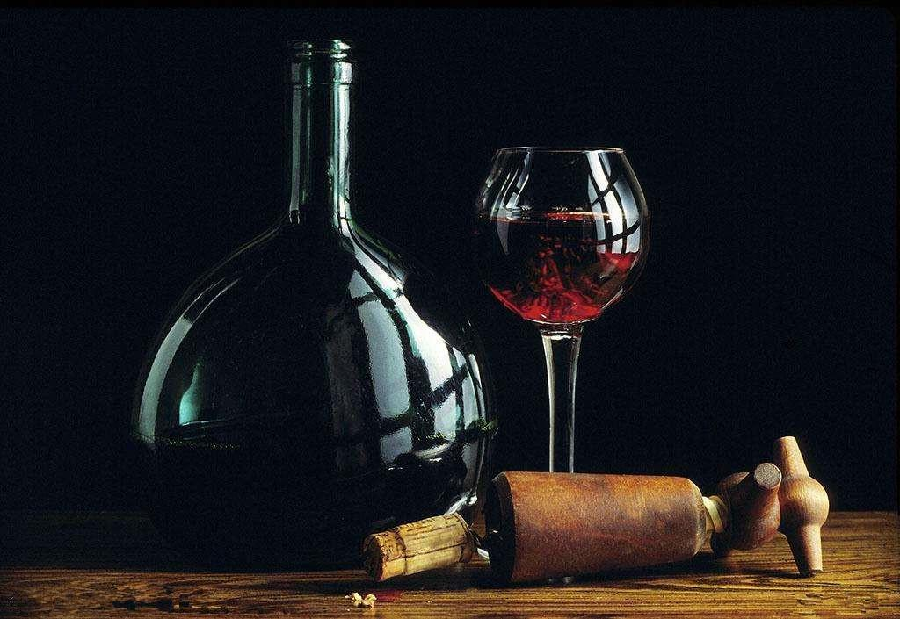
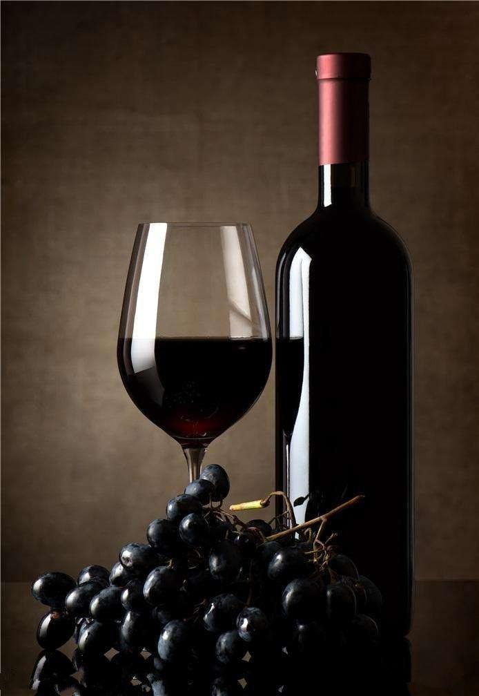

红酒是葡萄酒的一种，并不一定特指红葡萄酒。红酒的成分相当简单，是经自然发酵酿造出来的果酒，含有最多的是葡萄汁，葡萄酒有许多分类方式。以成品颜色来说，可分为红葡萄酒、白葡萄酒及粉红葡萄酒三类。其中红葡萄酒又可细分为干红葡萄酒、半干红葡萄酒、半甜红葡萄酒和甜红葡萄酒，白葡萄酒则细分为干白葡萄酒、半干白葡萄酒、半甜白葡萄酒和甜白葡萄酒。粉红葡萄酒也叫桃红酒、玫瑰红酒。杨梅酿制的叫做杨梅红酒。
红酒即红葡萄酒是红色的葡萄酒， 葡萄在大约公元前1000年到前500年之间在法国南部出现，而后它开始在 地中海盆地的大部分地区进行繁衍传播。在葡萄酒出现的早期，这种饮料一直被视认是一种只有贵族才能享用的高尚饮品，也是一种用来敬拜酒神巴克斯（Bacchus）的祭神用品。红酒在全世界的基督教徒的心中还代表了 耶稣基督的血液，这点促进了红酒的平民化，使得平常民众也拥有了饮用甘美的红酒的权利。

网络上有一种说法：“很多人都认为红酒就是葡萄酒。但其实这两种酒是有一定的区别的。” 这个观点是完全错误的， 红酒就是红葡萄酒的意思， 根本没所谓的这么多区别，即红酒=红葡萄酒，但通常来说，红酒一词作为葡萄酒的统称存在。
葡萄酒种类繁多。一般分为不起泡葡萄酒及气泡葡萄酒两大类。不起泡葡萄酒又分白葡萄酒、红葡萄酒及 玫瑰红葡萄酒三种；气泡葡萄酒则以香槟为代表。另外，添加 白兰地的雪莉酒：加入草根、树皮，采传统药酒酿造法制成的苦艾酒，都是葡萄酒的同类品。但一般而言，我们可以将葡萄酒分为下列五种类型：
(1)静态酒-红酒、白酒、 玫瑰红酒
(2) 气泡酒- 香槟
(3)加 烈酒- 波特、 雪莉、天然甜酒
(4)加味酒- 苦艾酒
(5)彼诺甜酒
下面，我们主要来介绍静态葡萄酒、气泡葡萄酒及加烈葡萄酒三类。
静态葡萄酒：由于静态葡萄酒排除发酵后产生的二氧化碳，故又称无气泡酒。这类酒是葡萄酒的主流产品，酒精含量约8%-13%。依酿葡萄品种与酿制方式不同，又可分为白酒、红酒和玫瑰红酒。
白酒只将葡萄的汁液发酵，且培养期通常在一年内，口味清爽，单宁含量低，带水果香味及果酸味。
红酒将葡萄的果皮、果肉、种子等与果汁一直发酵，且培养一年以上。口味较白酒浓郁，多含单宁而带涩味，因发酵程度较高，通常不甜但酒性比白酒稳定，保存期可达数十年。
加烈葡萄酒：在发酵过程中或发酵后加入其它高浓度酒导致酒精含量较前二类高，约15%-22%。培养期长且混合不同年份及产区的酒，酒性较稳定，保存期较久。西班牙的雪莉酒即为此类中的佼佼者。
